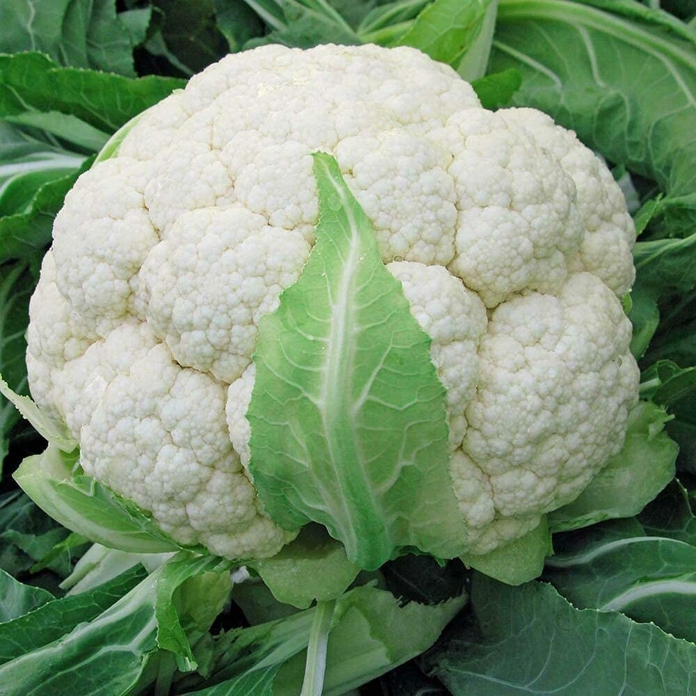
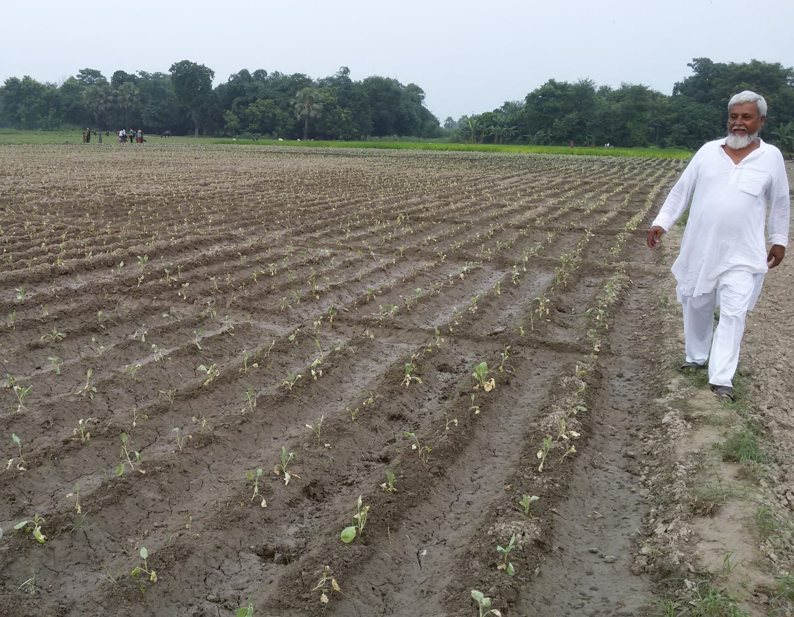
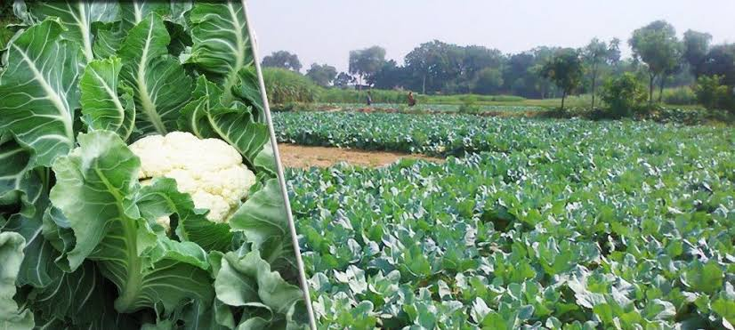
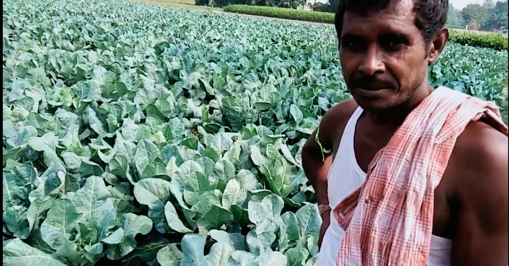
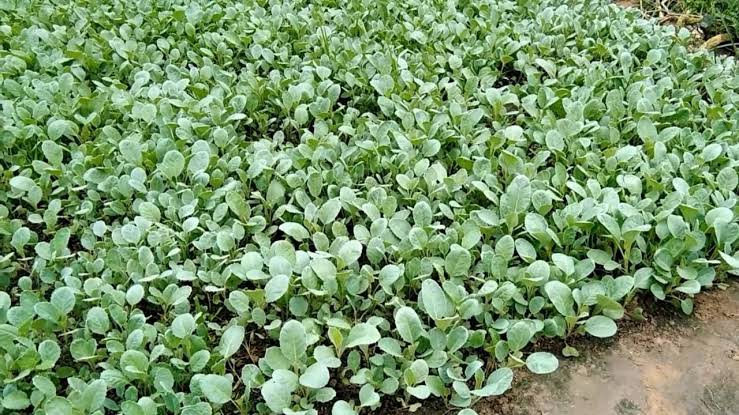
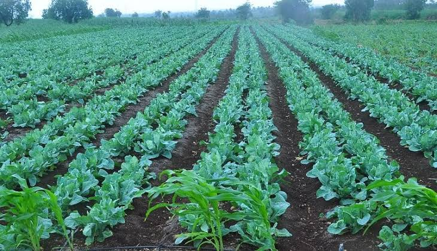
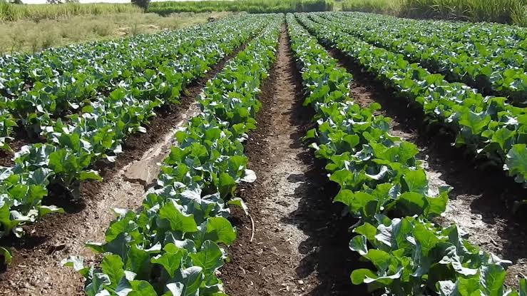

Agriculture will make
Agriculture will make
your life better
Maharaja Seeds CO. is a prominent player in the agricultural sector, specializing in the supply of high-quality seeds. The company's commitment to excellence extends beyond product quality to encompass customer satisfaction and support
Explore

Who we really are &
Situated in the heart of Hajipur, Vaishali, Bihar, this company is
strategically located to cater to the diverse agricultural needs of
the region. With a dedicated focus on providing top-notch seeds,
Maharaja Seeds has become a trusted partner for farmers and
agricultural enthusiasts alike.
In addition to supplying seeds, Maharaja Seeds also provides
valuable insights and information to farmers, aiding them in making
informed decisions about crop selection and cultivation practices.
The company's presence in the agricultural landscape of Bihar
reflects its dedication to contributing to the prosperity of the
farming community and the overall growth of the region.
Who we really are &
why choose us
Situated in the heart of Hajipur, Vaishali, Bihar, this company is strategically located to cater to the diverse agricultural needs of the region. With a dedicated focus on providing top-notch seeds, Maharaja Seeds has become a trusted partner for farmers and agricultural enthusiasts alike.
The company's commitment to excellence extends beyond product quality to encompass customer satisfaction and support. Maharaja Seeds CO. values its relationships with customers and aims to be a reliable source of agricultural solutions. Whether it's traditional crops or modern hybrids, the company is equipped to meet the diverse demands of the farming community.
Shop Now
Check out our
products
Here are some selected plants from our showroom, all are in excellent shape and has a long life span. Buy and enjoy best quality.

Cauliflower - ANURADHA
This is a very good selection from research variety. Long time keeping quality, milky white curd colour. Maturity time 45-55 days. Curd weight : 500g - 1.25kg*. Best sowing time is March to July.Cauliflower - SHITAL
An ordinary variety, compact full Cauliflower and milky white color. Maturity duration : 50-60 days from transplanting. Best sowing time : August to September . Curd weight : 500g - 1kg.Ladyfinger - POKHRAJ 2256
Flowering begins from 35 to 40 days after sowing. The crop is harvested in 55 to 65 days after planting when pods are 2 to 3 inches long. At this stage, the pods are still tender.BITTER GOURD - 2052
he crop of bitter gourd takes about 55-60 days from seed sowing to reach first harvest. Further pickings should be done at an interval of 2-3 days as bitter gourd fruitsBRINJAL - 5520
Brinjal fruits are ready for picking 60–160 days after transplanting, first harvest can be done 55–60 days after harvested when they are greenish yellow or bronze and their flesh is dry and tough.BEETROOT - 4545
Beetroot is generally ready for harvest between 75 and 90 days in the summer and 100 and 120 days in the winter. However, harvesting usually occurs in stages due to the variable nature of beetroot and uneven spacing from multi-germ seed.
BOTTLE GOUR - 1522
Bottle gourds can be harvested 55–75 days after sowing, depending on the variety and season. The fruit should be harvested when the rind is tender and green. Delaying harvesting can make the fruit unfit for marketingCHILLI - 9934
The duration of a chilli crop can range from 150–180 days, depending on the variety, season, climate, fertility, and water management.Green chilli crops can yield about 28.10 t/ha of green chilli in a crop duration of 195–205 daysSPONGE GOURDS
Crop is ready for harvest in about 60 days after sowing. On an average its yield is 150-200q/ha. Post Harvest Management: Harvested fruits of sponge gourd are packed in baskets to avoid injury and can be kept for 3-4 days in a cool atmosphere.CUCUMBER - 1122
Cucumbers are a warm-season crop that are sensitive to frost. In India, the cucumber season is from January to April.Cucumbers can be grown as a summer crop from January to February, or as a rainy season crop from June to JulyCAULIFLOWER
Cauliflower is ready for harvest 90–120 days after planting, depending on the variety, climate conditions, and the age of the seedlings . Cauliflower heads are ready for harvest when they are compact, white, and firm, and ideally grow to 6–8 inches in diameter.Gallery





